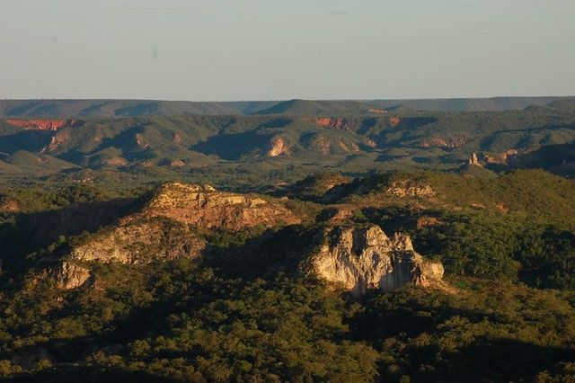

Trilha das Veredas
Guiados por condutores locais, você percorre os caminhos que inspiraram Grande Sertão: Veredas. As veredas — faixas úmidas com buritis gigantes — criam um contraste deslumbrante com o chapadão seco do Cerrado. É possível ouvir araras, avistar emas e sentir o cheiro inconfundível do mato do sertão.